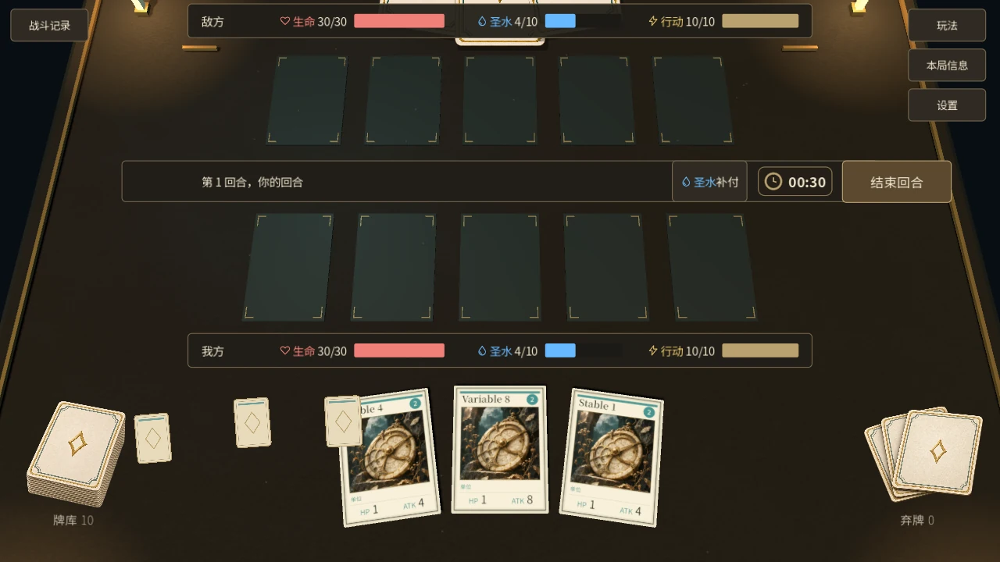

亲手制作卡牌，用积木编排技能。带上自己的卡组，和好友同桌对战，或加入在线匹配。

在游戏内调整卡牌属性和卡图，组合技能的触发条件与效果。做好卡组后，就能直接带进练习或对战。
可以从创意工坊预览并导入卡组，也可以把自己做的卡组导出分享。
匹配对手，选好卡组后从双方合并的牌池抽牌。对局计入排位积分。
和在线对手使用共用牌库对战，对局不计排位积分。
使用房间号或局域网联机，也可以在同一台电脑上轮流操作。
完整解压后打开 Cardex.exe。遇到画面异常时，可用 Compatibility.cmd 启动。
Cardex.exe
Compatibility.cmd